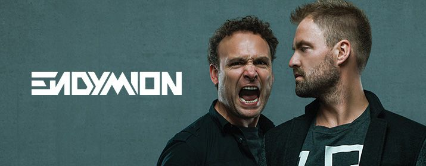

Q-Dance
Endymion ist ein niederländischer Hardcore-Techno-Act, der im Jahr 1997 gegründet
wurde und aus Bart Revier, Bas Lint sowie Jelle Neys besteht. Ihre Produktionen sind
im Genre Raw Hardstyle verwurzelt.
Endymion arbeiten viel mit anderen Hardcore Techno DJs und Formationen
zusammen, wie Evil Activities, Neophyte, Nosferatu und The Viper. Sie sind auch
regelmäßig bei großen Veranstaltungen wie Masters of Hardcore, Qlimax,
Dominator, Decibel Outdoor Festival, Mystery Land, Defqon.1 oder Project Hardcore
vertreten.
Seit 2001 sind Endymion beim Label Enzyme X, dass zu Enzyme Records gehört.
Im Januar 2013 wechselten Endymion zu Neophyte Records, wo sie ebenfalls ihren
Track Make Some Noiseveröffentlichten. Der Wechsel fand höchstwahrscheinlich
aufgrund der "Änderung" ihres Musikstils statt. Dieser wird von vielen als Mischung
aus Dubstep und Hardcore beschrieben.